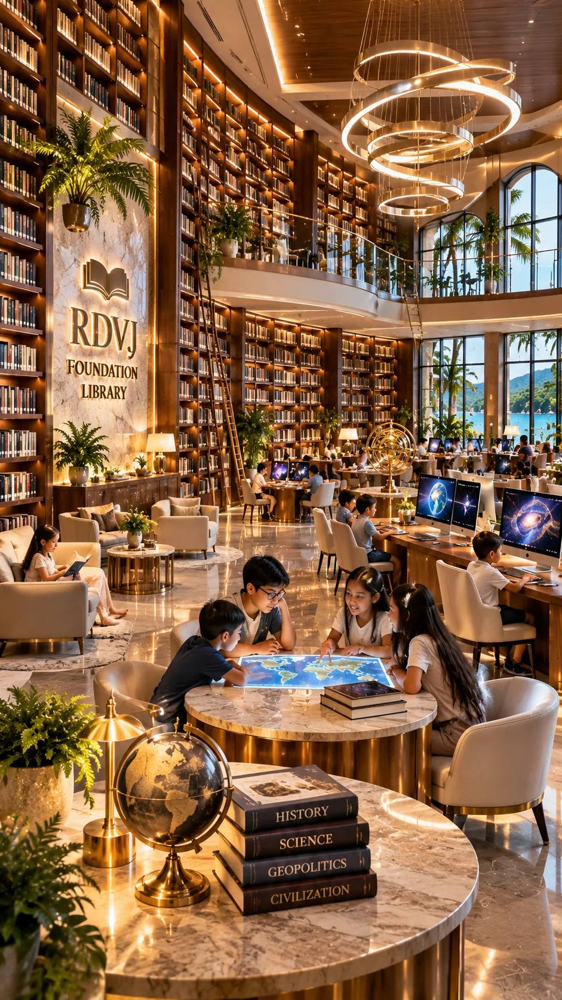
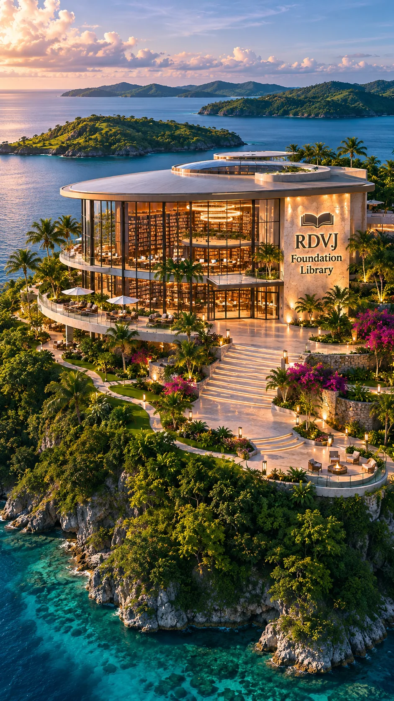

01
Stories without ceilings
Books, quiet reading corners and discoveries on every floor.

Expanding opportunity through learning, spiritual exploration, culture, and extraordinary spaces that welcome people of every generation.
Talent and curiosity exist everywhere. Access to knowledge, meaningful opportunities and inspiring environments does not.
RDVJ Foundation works toward a world where people of all ages can explore history, science, geopolitics, art, technology, spirituality and the questions that make us human. Our proposed library in the Philippines is one expression of that broader vision.
The story behind the dream ↗
“I want to create the environments where people can discover what is possible.”
One open door can change a lifetime.
Imagine a luminous hilltop gathering place surrounded by water, designed to make learning feel extraordinary and accessible.

Books, quiet reading corners and discoveries on every floor.

Computers, digital literacy and tools to create.
History, science, geography, geopolitics, art and the wider world.
A welcoming community of learners, thinkers and mentors.
Hands-on technology, experimentation and imaginative projects.
Wisdom, reflection, practical skills and paths toward new opportunities.
I grew up knowing what it means to have ambition and ability, but not always the environment or resources to develop them. A teacher who believed in me gave me the chance to stand before an audience and discover my voice. I have never forgotten her.
My journey from poverty in the Philippines to building a life in the United States taught me that talent is not enough. People need access, encouragement, and environments that allow them to grow.
My faith inspires me to turn gratitude into service. This foundation is my commitment to opening doors to learning, spirituality, community and opportunity for people of all ages.
RDVJ Foundation and 9nth Dimension are sister companies.
We are in the vision-building stage. Our goal is to create spaces where anyone can arrive curious and leave with new knowledge, connection, perspective and possibility.
Books, computers and knowledge that should never be out of reach.
A beautiful, safe, encouraging environment to learn together.
Mentorship and experiences that help people discover their gifts.
We are laying the groundwork for RDVJ Foundation Library. Join us in expanding access to knowledge, spiritual exploration, cultural discovery and transformative opportunities. The proposed Philippine library is our flagship vision.
RDVJ Foundation states that it is a U.S. 501(c)(3) organization (EIN 88-3049928). Confirm current IRS recognition and applicable donation deductibility before contributing. Library images are architectural concepts; the building is not yet constructed.